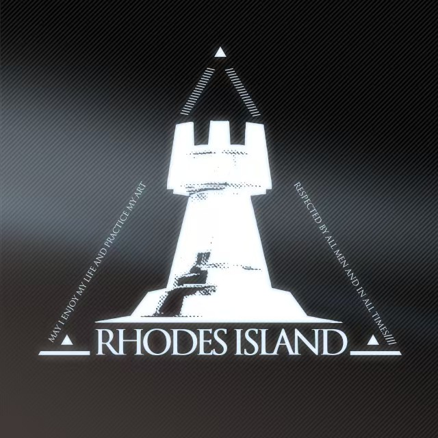

本页面为鹰角网络与《明日方舟》专题介绍页。鹰角网络是国内优秀游戏研发企业，2017年于上海成立，专注原创二次元游戏研发、美术内容创作与IP长线运营。 旗下核心代表作《明日方舟》于2019年正式上线，是策略塔防类手游标杆作品。游戏以末日泰拉世界为背景，围绕矿石病、各大势力纷争展开宏大世界观剧情，凭借精良原画、深度剧本、特色塔防玩法收获全球大量玩家。 多年来鹰角持续更新游戏主线剧情、限时活动、全新干员内容，同步拓展漫画、周边、线下展会等衍生IP内容，稳步完善明日方舟世界观生态。